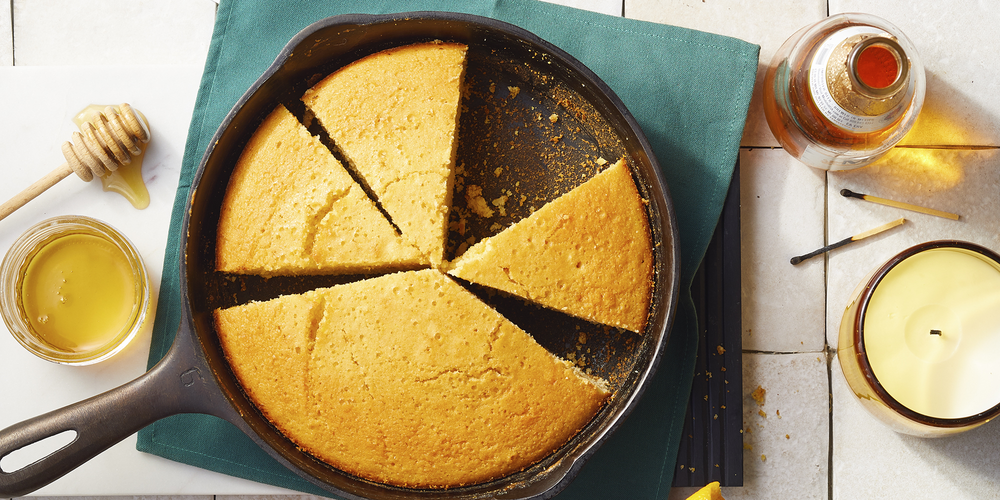

Buttermilk Cornbread

Description
A yummy dessert that melts our hearts
Ingredients
Directions
- Preheat oven to 375 degrees F (175 degrees C). Grease an 8 inch square pan.
- Melt butter in large skillet. Remove from heat and stir in sugar.
Quickly add eggs and beat until well blended.
Combine buttermilk with baking soda and stir into mixture in pan.
Stir in cornmeal, flour, and salt until well blended and few lumps remain.
Pour batter into the prepared pan.
- Bake in the preheated oven for 30 to 40 minutes,
or until a toothpick inserted in the center comes out clean.